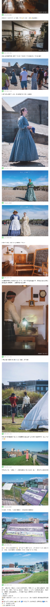
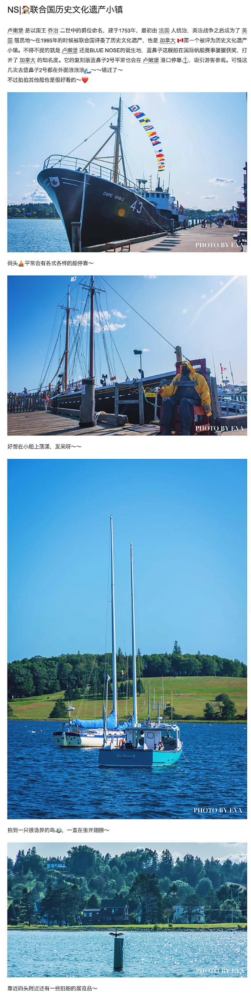

CHAPTER 01 / INTRODUCTION
概述
这是向大家种草🌿为目的的🇨🇦加拿大 海洋三省景点合集，给大家介绍的是🇨🇦加拿大 名气不大但拥有着丰富旅游资源的海洋省份景点，NS 新斯科舍 省，NB 新不伦瑞克省，PEI 爱德华王子岛 ～（ps：纽芬兰岛 拉布拉多省日后会另开游记单独介绍～）
关于我，在2014年9月来到这个陌生的国土，开始了留学生涯，在工商管理硕士毕业🎓之后，因为对旅游的喜爱而踏进了旅游业，成为一名当地导游。有过迷茫，但在旅途中找寻自我，梦想着走遍世界的平凡女生。
因为居住在🇨🇦新斯科舍省的 哈利法克斯，大部分的景点，都是重复前往，所以游记内容不会涉及每天规划、地方美食、住宿攻略，但如果有任何的疑惑，欢迎留言哟！日后也会继续补充这部分的内容～没有华丽的语言，只有真诚分享～希望大家喜欢，附上在 哈利法克斯 的黄昏🌇。
原图与署名说明：本章文字和图片来自你提供的「图1」。照片中的
EVA’S PHOTOGRAPHY 水印已原样保留，地点说明为
Halifax Waterfront Boardwalk。
查看图1原始截图 ↗。转载与公开展示授权尚待核实。
CHAPTER 02 / NOVA SCOTIA
NS｜💂🏻♀️从未被攻破的军事堡垒
本章聚焦新斯科舍省哈利法克斯最具代表性的军事历史地标之一 —— Halifax Citadel National Historic Site of Canada。在山顶石堡里，可以看到红制服卫兵、风笛与军乐、操练表演、古装讲解员、要塞营房与炮台视角，也能从高处俯瞰哈利法克斯市区与港口。
你提供的原始图文长截图完整记录了这次参观的顺序：先从城门与卫兵入场，接着观看仪仗与操演，再进入要塞内部的历史空间，最后走上高处观景平台。下面保留两段原始长截图，方便按原帖节奏继续阅读与后续增补整理。
章节关键词：Halifax Citadel卫兵换岗军乐与操演古堡内部历史演员哈利法克斯观景点
第二章原始图文长截图 · Part 1从城门卫兵、操演、军乐到要塞内部空间，按原始顺序保留。

第二章原始图文长截图 · Part 2继续展示历史演员、教室陈设、营地演示，以及高处俯瞰哈利法克斯的视角。
原始资料说明：本章内容根据你上传的两张长截图整理，并保留为可连续滚动查看的“原始图文长卷”。由于原始截图分辨率较低，当前先以截图形式归档；若后续提供更清晰原图或正文，我可以再把本章进一步拆分为可选中文字段落与单张大图画廊。
CHAPTER 03 / NOVA SCOTIA
NS|🐳追寻泰坦尼克号踪迹
📍 新斯科舍省 · 哈利法克斯哈利法克斯的泰坦尼克号历史线索、海事博物馆与城市记忆。
返回章节目录 ↑CHAPTER 04 / NOVA SCOTIA
NS|🚶🏻♀️漫步活力四射的海滨栈道
📍 新斯科舍省 · 哈利法克斯从海滨步道、夏日活动到港口风景，按原帖图文顺序漫步城市。
04 / 原帖图文第 1 / 1 部分 · 点击查看原始截图 返回章节目录 ↑CHAPTER 05 / NOVA SCOTIA
NS|🚪通往加拿大的门户PIER 21
📍 新斯科舍省 · 哈利法克斯Pier 21 移民历史与加拿大移民博物馆的探访记录。
返回章节目录 ↑CHAPTER 06 / NOVA SCOTIA
NS|🏠联合国历史文化遗产小镇
📍 新斯科舍省 · 卢嫩堡记录海港木船、彩色房屋与历史街区的城市漫游。

06 / 原帖图文第 1 / 2 部分 · 点击查看原始截图06 / 原帖图文第 2 / 2 部分 · 点击查看原始截图CHAPTER 07 / NOVA SCOTIA
NS|👍绝不能错过的北美最上镜灯塔
📍 新斯科舍省 · 佩吉湾灯塔、海边礁石、渔村小景与海岸风光。
返回章节目录 ↑CHAPTER 08 / NOVA SCOTIA
NS|⛰️高山与大海的邂逅
📍 新斯科舍省 · 布雷顿角高地公路、步道、山海观景与海岸落日。
08 / 原帖图文第 1 / 1 部分 · 点击查看原始截图 返回章节目录 ↑CHAPTER 09 / NOVA SCOTIA
NS|☎️寻踪电话发明者贝尔
📍 新斯科舍省 · 巴德克贝尔博物馆与布雷顿角巴德克湖畔旅行。
返回章节目录 ↑CHAPTER 10 / NEW BRUNSWICK
NB|🦞世界上最大的龙虾
📍 新不伦瑞克省 · 谢迪亚克探访巨型龙虾雕塑及当地趣味景点。
返回章节目录 ↑CHAPTER 11 / NEW BRUNSWICK
NB|🌎北美七大自然奇观之一
📍 新不伦瑞克省 · 芬迪湾记录芬迪湾潮汐、海蚀岩石与步道观景。
返回章节目录 ↑CHAPTER 12 / NEW BRUNSWICK
NB|🇺🇸与美国隔河相望的小镇
📍 新不伦瑞克省 · 圣安德鲁斯海边历史小镇、街巷、商铺与港口见闻。
返回章节目录 ↑CHAPTER 13 / NEW BRUNSWICK
NB|🧲一个神奇的小山坡
📍 新不伦瑞克省 · 蒙克顿蒙克顿磁力山（Magnetic Hill）的旅行体验与到访信息。
返回章节目录 ↑CHAPTER 14 / PRINCE EDWARD ISLAND
PEI|🐣加拿大联邦诞生地
📍 爱德华王子岛 · 夏洛特敦夏洛特敦的城市建筑、联邦诞生地与历史街区。
14 / 原帖图文第 1 / 1 部分 · 点击查看原始截图 返回章节目录 ↑CHAPTER 15 / PRINCE EDWARD ISLAND
PEI|🎀红发安妮的故事
📍 爱德华王子岛 · 卡文迪什绿山墙故居与红发安妮的故事及周边景观。
返回章节目录 ↑CHAPTER 16 / PRINCE EDWARD ISLAND
PEI|🌉世界上最长跨冻海大桥
📍 爱德华王子岛 · 联邦大桥 / Borden-Carleton联邦大桥航拍视角、灯塔与上岛后的海边景观。
返回章节目录 ↑CHAPTER 17 / PRINCE EDWARD ISLAND
PEI|🚢尽享大西洋风光
📍 爱德华王子岛 · Wood Islands 渡口从轮渡上岛，沿海风景、灯塔与甲板上的大西洋视角。
返回章节目录 ↑CHAPTER 18 / HALIFAX NEARBY
【哈法周边】🌈彩色的渔人码头
📍 哈法周边 · Fisherman's Cove / Eastern Passage彩色小店、木栈道与港湾码头的海边小镇记录。
返回章节目录 ↑CHAPTER 19 / HALIFAX NEARBY
【哈法周边】💐维多利亚式花园
📍 哈利法克斯 · Halifax Public Gardens公共花园的花坛、凉亭、喷泉与园内细节。
返回章节目录 ↑CHAPTER 20 / HALIFAX NEARBY
【哈法周边】🏖️水晶新月沙滩
📍 哈法周边 · Crystal Crescent Beach夏季海边踏浪、沙滩玩水与蓝色海岸线。
返回章节目录 ↑CHAPTER 21 / HALIFAX NEARBY
【哈法周边】❓3P......公园
📍 哈法周边 · Point Pleasant Park（快乐点公园）树林、海边纪念碑、小动物与散步路线，按原帖图文保留。
返回章节目录 ↑CHAPTER 22 / HALIFAX NEARBY
【哈法周边】📖Halifax藏书阁
📍 哈利法克斯 · Halifax Central Library现代图书馆的建筑空间、楼梯视角与馆内摄影。
返回章节目录 ↑CHAPTER 23 / HALIFAX NEARBY
【哈法周边】👩🌾最古老农贸市场
📍 哈利法克斯 · Halifax Seaport Farmers’ Market海港农贸市场的人群、摊位、手作和本地食物。
23 / 原帖图文第 1 / 1 部分 · 点击查看原始截图 返回章节目录 ↑CHAPTER 24 / TRIP PLANNING
行程规划建议&其他
📍 海洋三省 · 路线建议关于行程安排、季节、交通、装备与旅行节奏的原帖建议。
24 / 原帖图文第 1 / 1 部分 · 点击查看原始截图 返回章节目录 ↑